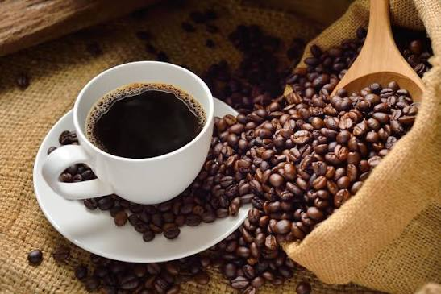

As drogas depressoras são substâncias que diminuem ou lentificam a atividade do sistema nervoso central, reduzindo o ritmo do corpo e as funções cerebrais. Elas atuam aumentando a ação de neurotransmissores inibitórios, como o GABA, o que resulta em um relaxamento profundo, alívio da ansiedade, diminuição da dor física e sonolência, ao mesmo tempo em que reduz os reflexos, a coordenação motora e a velocidade do pensamento. Essas substâncias também se dividem em diferentes categorias sociais e médicas, incluindo o álcool, que é a droga depressora lícita mais consumida no mundo, medicamentos controlados para ansiedade e insônia conhecidos como ansiolíticos e sedativos, além de analgésicos potentes como os opioides e drogas ilícitas como a heroína.
depressores
estimulantes

As drogas estimulantes são substâncias que aceleram o funcionamento do sistema nervoso central, deixando o corpo e a mente em um estado de alerta constante. Elas atuam aumentando a presença de mensageiros químicos essenciais no cérebro, como a dopamina e a noradrenalina, o que eleva temporariamente a energia, o foco e a disposição, ao mesmo tempo em que inibe sensações naturais como o sono e a fome. Essas substâncias estão presentes em diferentes contextos da sociedade, incluindo compostos lícitos de consumo diário como a cafeína e a nicotina, medicamentos controlados para o tratamento do TDAH como a Ritalina e o Venvanse, e drogas ilícitas de alto poder destrutivo como a cocaína, o crack e a metanfetamina.
As drogas perturbadoras, também chamadas de alucinógenas ou psicodélicas, são substâncias que modificam qualitativamente a atividade do sistema nervoso central, alterando a percepção da realidade. Ao contrário dos estimulantes e depressores, elas não aceleram nem desaceleram o cérebro, mas desregulam o seu funcionamento, agindo principalmente nos receptores de serotonina para distorcer os sentidos e a noção de tempo e espaço. Essas substâncias atuam principalmente nos receptores de serotonina, um neurotransmissor responsável pela regulação do humor, da percepção e dos sentidos. Isso resulta em um fenômeno chamado sinestesia, quando os sentidos se misturam, permitindo que a pessoa "veja sons" ou "ouça cores".
pertubadoras
ILÍCITAS:
As drogas ilícitas são substâncias cuja produção, comercialização e consumo são proibidos por lei. Elas atuam diretamente no sistema nervoso central, alterando o comportamento, o humor e a percepção da realidade, além de apresentarem alto risco de dependência física e psicológica..
LÍCITAS:
As drogas lícitas são substâncias cuja produção, comercialização e consumo são permitidos por lei. Embora sejam legalizadas, muitas delas possuem restrições de venda (como proibição para menores de 18 anos) ou exigem receita médica, pois também causam dependência e riscos à saúde.